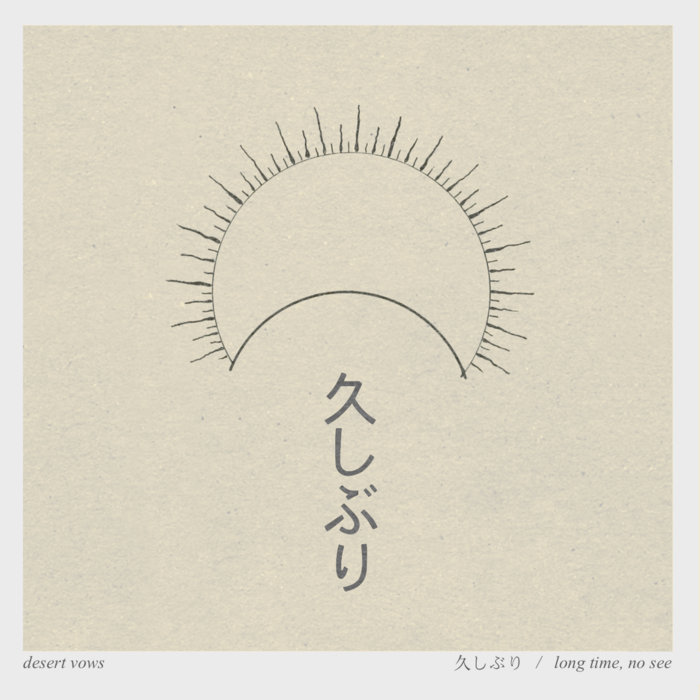
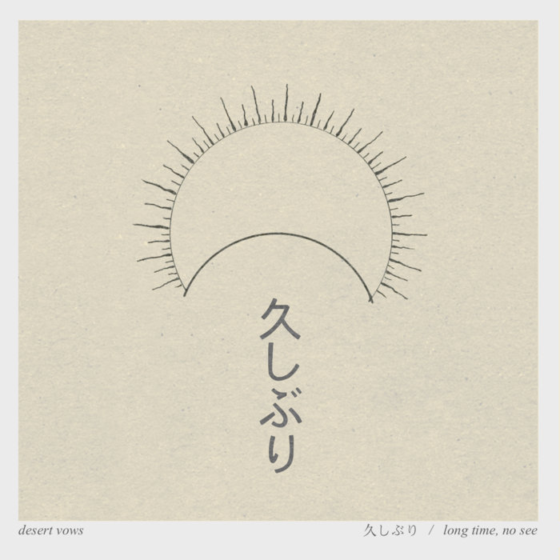

Day 128

Desert Vows ◆ Long Time, No See ◆ 2018
这张其实是很久之前的了，其实最近发的都是攒了很久的。这张是在哔哩哔哩上遇到，一开始的噱头是有二胡数学摇滚，听进去发现还挺不错的！说实话之前我和数学摇滚和 Emo 的关系一直都是感觉很酷但是听不太进去。最近慢慢有一些我很喜欢的了。不知道是遇到了对的音乐还是我变了。
Miyazaki Frontier 里悠然的二胡声我很喜欢。除此之外好像说不出来啥，总之来听吧！

Desert Vows ◆ Long Time, No See ◆ 2018
这张其实是很久之前的了，其实最近发的都是攒了很久的。这张是在哔哩哔哩上遇到，一开始的噱头是有二胡数学摇滚，听进去发现还挺不错的！说实话之前我和数学摇滚和 Emo 的关系一直都是感觉很酷但是听不太进去。最近慢慢有一些我很喜欢的了。不知道是遇到了对的音乐还是我变了。
Miyazaki Frontier 里悠然的二胡声我很喜欢。除此之外好像说不出来啥，总之来听吧！